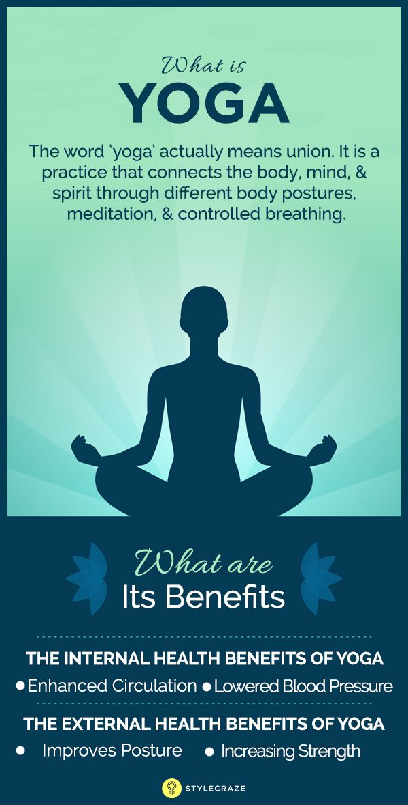
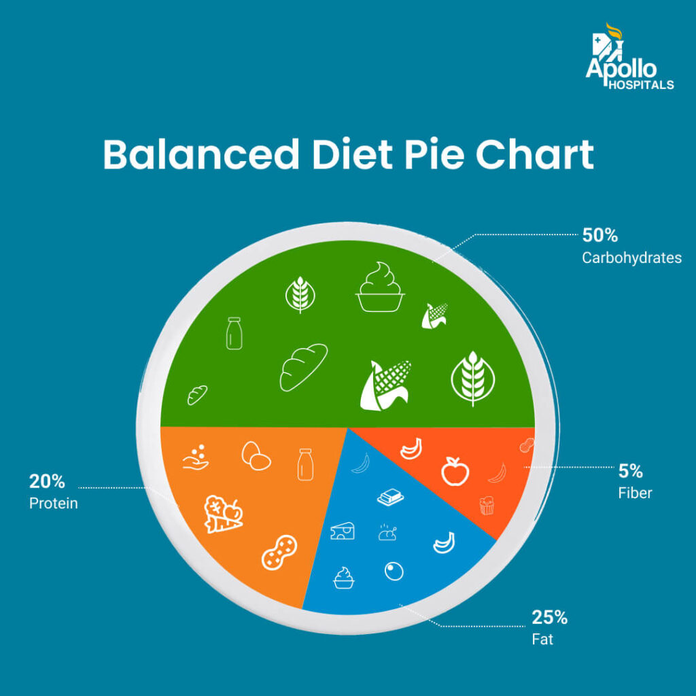

Practice yoga for just 10 minutes a day to boost your mobility, flexibility, and strength.
Most trusted name in yoga
Yog Yoga & fitness classes
Whether you're looking for beginner or starting yoga classes at home
or challenging workout classes to reach your fitness goals,
our ever-expanding yoga group has something for everyone.
And with our weekly live classes you can tune in for real-time instruction
and two-way chat with your favorite instructors.
We also have special disease related yoga sessions also.
MOST TRUSTED NAME OF YOGA TRAINING
Yog yoga fitness group

Yoga offers numerous physical and mental benefits, including improved flexibility, strength, and balance, along with reduced stress and anxiety. It also enhances mental clarity, sleep quality, and respiratory function, and can support weight management and boost immunity.
Meditation offers significant mental and physical benefits, including reduced stress and anxiety, improved focus and concentration, and enhanced emotional well-being. Physically, it can help lower blood pressure, improve sleep quality, and reduce chronic pain. Regular practice also increases patience

A healthy diet provides numerous benefits, including weight management, a stronger immune system, and a reduced risk of chronic diseases like heart disease, diabetes, and some cancers. It also improves mental well-being and cognitive function, boosts energy